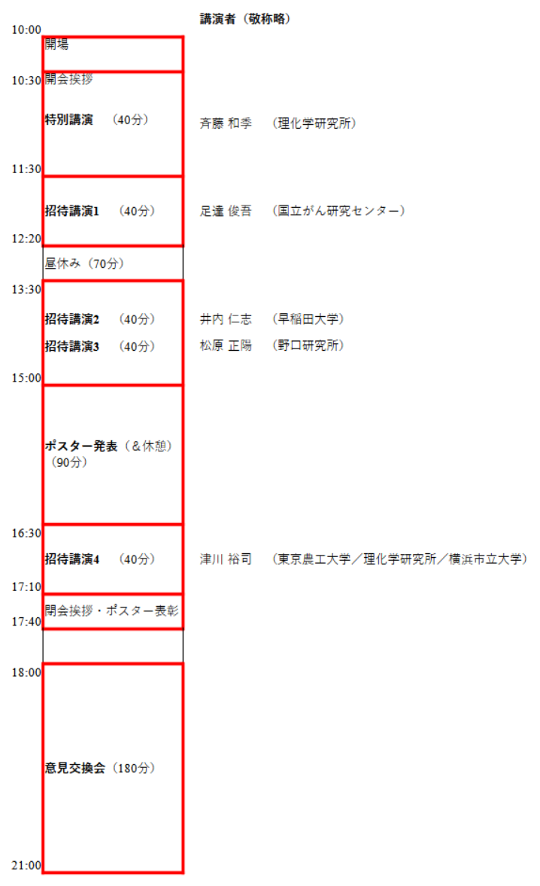

2024年（第9回）ワークショップを開催します
本研究会9回目の、独自企画・一般公開ワークショップを、4年ぶりに会場で（いわゆるオンサイト、“オフライン”で）開催します（参加に条件はありません）。
「質量分析が専門だが、インフォマティクスについては知らない研究者」
「質量分析を利用しており、インフォマティクスについては知らないが、必要を感
じている研究者」
「質量分析については何も知らないが、インフォマティクスには慣れているという研究者」
「とにかく分子生物学・生化学も質量分析も何も知らないが、情報学を専門にしている研究者」
「このような問題を抱えているが、一緒に研究できる人はいないか」
等々、分野・専門を問わず幅広いフィールドの人を歓迎します。（なお、基本的には研究者の方の参加を念頭に置いていますが、それ以外の方の参加も全く妨げるものではありません。）
また前回までの、一般参加者の「ショート講演（口頭発表）」に代わって、ポスター発表セッションを行います。詳細は下記をご覧ください。
このワークショップは、日本バイオインフォマティクス学会（JSBi）の（公募）研究会活動として開催されます。
なお、このページには順次、情報を追加していく予定です。
参加登録はこちら
ワークショップ開催概要
- ワークショップ名：
質量分析インフォマティクス研究会・第9回公開ワークショップ （2024年） - 開催日時： 2023（令和5）年5月12日（金）午前10時開場～午後5時40分頃ワークショップ終了～午後9時頃意見交換会終了（予定）
-
開催場所： 理化学研究所横浜事業所
・交流棟ホール
（〒230-0045 神奈川県横浜市鶴見区末広町1丁目7-22）
［アクセス］ ［構内図］ - 理研横浜・横浜市立大学共同キャンパスへの入所は、新型コロナ・パンデミック以降厳格化しておりますので、以下のようにしてご参加ください。
- 正門横の守衛詰所で、「質量分析インフォマティクス研究会のワークショップ参加です」と申告してください（氏名などを確認されることもありますので、指示に従ってください）。
- 正面に見える交流棟においでください。交流棟入口で受付を行います。その際、入館用のゲスト用カードキーをお渡しします。カードキーはお帰りになる際に確実に返却していただくよう、お願いいたします。また、意見交換会に参加される方は、受付の際に参加費（食事代）をお預かりします。
- 当日参加（事前登録なし）の人は、守衛詰所でその旨申告してキャンパスに入場、交流棟の入口受付で当日参加登録し、運営担当者に解錠してもらってください（当日参加者のカードキーは原則として準備されていません）。
- 入館用カードキーを所持されている当日参加の方も、まず受付においでください。
- 講演者 （敬称略）
- 特別講演：
- 斉藤 和季 （理化学研究所）
『質量分析による植物メタボロミクスの開拓』 - 招待講演：（講演順）
-
足達 俊吾 （国立がん研究センター）
『ますます重要性が高まる質量分析インフォマティクス技術（データ取得者からの希望）』[仮題] -
井内 仁志 （早稲田大学）
『モデルに依存しない時系列オミクスデータ解析手法の開発』 -
松原 正陽 （野口研究所）
『糖鎖 MS データ解析ソフトウェアの現状と課題』 -
津川 裕司 （東京農工大学／理化学研究所／横浜市立大学）
『メタボロミクスの網羅性と深度向上に向けた質量分析情報計測に関する研究』 - 一般参加者によるポスター発表も公募しています。（こちらを参照）（〆切りました）
- なお、例年行っておりました、全招待講演者参加のパネルディスカッション（総合討論）は、今回は実施しません。意見交換会で議論が盛り上がることを期待しております。
- 参加費用： 無料
- 主催： 質量分析インフォマティクス研究会（日本バイオインフォマティクス学会 (JSBi)）
- 協賛： 理化学研究所 環境資源科学研究センター (CSRS)
- 服装 (dress code)： casual（軽装でおいで下さい）
- 本ワークショップの開催の目的に沿って、参加者間でのより深い交流・情報交換を可能にするため、参加者によるポスター発表を募集します。
-
発表形式は通常の学会のポスター発表と同じです。
一般的な質量分析のアプリケーション・解析事例のほか、
といった話題のいずれでも差し支えありません。また、必ずしも研究発表である必要はなく、コミュニティへの要望や話題提供など、 独自研究以外の内容でも構いません。積極的なご応募をお待ちしています。
「方法論・ソフトウェア・データベースなどを開発した」
「質量分析データの情報学的研究を行った」
「現在の研究の問題点を打開するために情報学的研究が必要である」 - 応募には、下の参加登録フォームからご登録ください。折り返し、タイトル・著者・要旨（発表概要）（テンプレートあり）を投稿していただくためのページURLをメールでお送りします。
-
ポスター発表の申込〆切は4月28日（金）24時です。
- なお、要旨の送付がなかった場合には要旨集に掲載されません（したがって発表したことが何も形に残りません）ので、要旨は確実に送付するようお願いします。
- また、エントリしたポスターを対象にベストプレゼンテーション賞を審査します。奮ってご参加ください。
- ワークショップ終了後、意見交換会を行います。時間帯が遅くなるため、ワークショップ本体とは独立に参加可能ですが、実態としてはワークショップの延長である、と主催者は位置づけています。
- 今回は総合討論セッションを実施しませんので、それに代わるものとしてテーマを限定せずに質疑応答や討論などを行える時間です。積極的にご参加ください。
-
なお、時間帯が遅くなるため食事を取りながら行います。食事費用として予算4000円程度4950円をワークショップ受付時に徴収予定です（個室を設定したことなどもあり、予定よりも高額になってしまったことをお詫びします）（詳細決定後に改めて告知します）。
-
参加人数を事前予約時に確定させますので、「意見交換会への参加を申し込んで、当日欠席する」いわゆる「当日ドタキャン」は研究会の予算に赤字を発生させることになります。
従って、キャンセルする場合は必ず当日までに研究会に（または遅くとも会場で世話人に）ご連絡ください。最悪の場合、「予約したが結局参加しなかった」場合でも、参加費用をお支払いいただく可能性があります。 - 参加ご希望の方は、以下の登録フォームから事前参加登録をお願いします。
- （ポスター発表への応募、意見交換会への参加もここから登録して下さい）
-
申し込みに関連するお問い合わせなどは ms.bio.info@gmail.com にご連絡下さい。但し、12日ワークショップ当日は、世話人全員がワークショップ運営にかかり切りになるため、参加者以外の方のお問い合わせには対応できませんのでご了承下さい。
- なお、「登録完了」のメールはgoogle.comドメインのアドレスから送られます。24時間以内に返信が届かない場合は、spamに自動分類されていないことをご確認の上、ms.bio.info@gmail.comにご連絡ください。
- 事前参加登録は5月10日（水）24時を以て〆切ります。会場に余裕がある場合は当日参加が可能です。
質量分析で新発見！必要な情報基盤と現状の理解
プログラム
 進行表・予稿集（暫定版）

ポスター発表募集
受け付け終了しました
意見交換会
受け付け終了しました
ワークショップ事前参加登録
事前登録は終了しました。
以後は、会場受付での「当日参加登録」をお願いします
Page Last Updated: Mar. 29, 2024